Je souhaiterais d'abord remercier mon tuteur de design Kévin Vennitti ainsi que Valentine Reynaud, ma professeur de philosophie, qui m'ont beaucoup aidé dans la définition et la rédaction de mon mémoire. Je voudrais également remercier Micode, de son vrai nom Michaël de Marliave, qui m'a autorisé à utiliser les résultats de son sondage dans le cadre de mes recherches.
Au cours de ces dernières décennies, les usages numérique de notre quotidien se sont intensifiés, notamment par l'utilisation régulière des réseaux sociaux qui nous permettent d’accéder à plusieurs sources d'information, d'inspiration, et même à travailler depuis quelques années maintenant. Ces réseaux sociaux incluent des services de communication comme Messenger, Whatsapp, IMessage et bien d'autres. 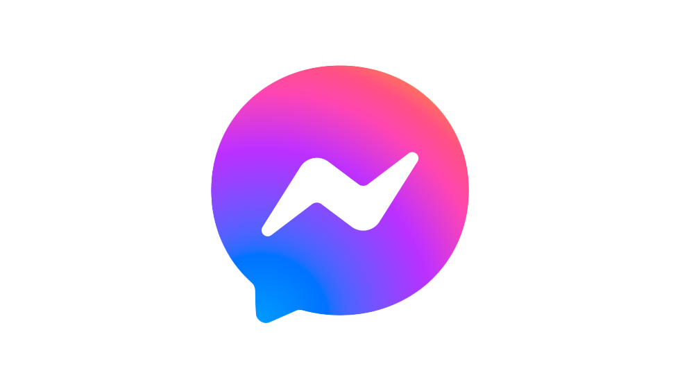 Messenger : Service de messagerie de Facebook 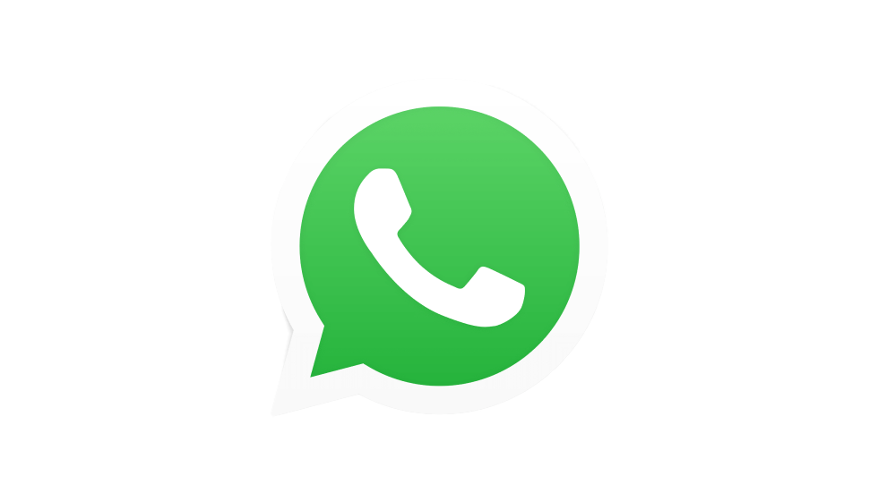 Whatsapp : Service de messagerie appartenant également à Facebook 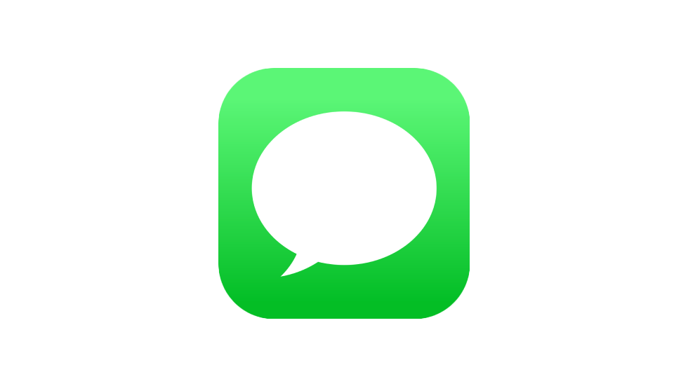 IMessage : Service de messagerie de Apple
L’expérience utilisateur de ces réseaux doit donc être conçue de manière à ce que la frustration ressentie soit moindre, dans le but de conserver notre fidélité. Cependant, un service de qualité a, généralement, un coût, ce qui ne semble pas être le cas à première vu. Derrière cet aspect gratuit et fonctionnel, se dégage un problème qu'évoque Tristan Harrys1 dans le documentaire “derrière nos écrans de fumée", avec cette citation, "si c'est gratuit, c'est que vous êtes le produit". En utilisant régulièrement ces réseaux, nous leur fournissons nos données personnelles, nos coordonnées, ce que nous aimons ou faisons. Grâce à ces données, l’anticipation de nos réactions face à un contenu devient alors possible. Nous devenons alors des données qu’ils peuvent vendre à des annonceurs.
Bien que ces faits aient été dénoncés et reconnus par des spécialistes tels qu'Edward Snowden2, ou encore Tristan Harrys, les utilisateurs, conscients de ces pratiques, restent majoritairement dans l’indifférence en dédramatisant la situation, en argumentant que ce ne sont que des pubs et qu’aucun mal ne leur est fait directement. Tristant Harrys Edward Snowden
Afin de nous laisser leur fournir un maximum de données, ils usent de différents stratagèmes permettant de manipuler nos actions. Mais alors, comment échapper à l'exploitation systématique de nos données personnelles par les réseaux sociaux ? Dénoncer cette manipulation, qui mène à une utilisation néfaste et non consentie de nos données, est donc nécessaire. Suite à la lecture de cet écrit ainsi qu'a l'expérimentation des solutions que j'ai imaginées, vous aurez certaines clés en main afin d'enclencher l'action vous permettant de reprendre le contrôle de votre vie numérique.
Premièrement, nous verrons en quoi et comment ces réseaux permettent d’établir une forme de manipulation sur leurs utilisateurs. Et deuxièmement, vous pourrez découvrir différentes préconisations, testées personnellement, avec comme objectif la reprise en main de notre vie numérique sur le long terme.
Un dark pattern se définit comme étant une caractéristique du design d'interface conçue pour inciter les utilisateurs à réaliser des actions non souhaitées, mais qui profitent à l’entreprise en question1. Le consentement des cookies illustre un type de dark pattern : par différentes modalités dans l'interface, on incite l'utilisateur à accepter les cookiess lorsque nous nous rendons sur un site internet. Cependant, les cookies sont des fichiers informatiques gardant en mémoire nos différentes actions et enregistrant toutes nos interactions sur le site2 afin de permettre aux entreprises de mieux nous connaître, de personnaliser l'expérience mais aussi de commercialiser ses données. Mettre le bouton "Accepter les cookies" en évidence et rendre le bouton "Refuser les cookies" difficile d'accès est représentatif d'un dark pattern. Les dark patterns peuvent se résumer par le simple fait de manipuler et diriger l’utilisateur par le design.
Certains réseaux sociaux tels que Facebook utilisent des procédés plus perfides et invisibles afin de récolter un maximum de données. Selon Forbes3, Facebook récolterait secrètement les données de l'accéléromètre des utilisateurs d'Iphone. Grâce à l'accéléromètre, d'après Tommy Mysk4, Facebook est capable de déterminer si vous êtes assis, debout ou en train de marcher. Le capteur serait même assez sensible pour capter votre respiration ou votre pouls, ou encore enregistrer l'audio de votre appareil grâce aux vibrations émises par les haut-parleurs. D'autres chercheurs ont réussi par le passé à identifier le téléphone utilisé grâce à la signature de l'accéléromètre, mais également de déterminer ce qui était tapé sur un clavier d'ordinateur lorsque le mobile était posé à côté. Ces données récoltées leur permettent la revente de nos données une fois analysées et traitées, et ainsi, de nous proposer des services gratuits car en vérité payé par notre utilisation.
L'engagement1 d'un utilisateur envers un service est déterminant dans la quantité d'information que les entreprises responsables des réseaux sociaux vont pouvoir récupérer. "Durant les 50 premières années, la Silicon Valley vendait des ordinateurs, des logiciels, c'était un business tout ce qu'il y a de plus normale. Mais depuis environ 10 ans les grosses entreprise de la Silicon Valley se sont mises à vendre leurs utilisateurs.", Roger McNamee
Cette citation de Roger McNamee dans "Derrière nos écrans de fumée"2 énonce le fait que les données récoltées par les entreprises servent à mieux nous caractériser, pour ensuite être revendues à des annonceurs3 dont nous seront la cible de publicités personnalisées. C'est en vérité plus subtil que de simplement nous reléguer au rang de produits, dans les faits, nous ne sommes pas directement vendu mais plutôt notre profilage publicitaire, déduis via ces données. Cette citation révèle également une évolution, un tournant notable pris par les grandes entreprises. Tristan Harrys définit ce système comme étant un capitalisme de surveillance, générant du profit en traquant continuellement nos moindres faits et gestes.
Shoshana Zuboff est une universitaire, professeure émérite à la Harvard Business School, sociologue et femme de lettres américaine. Ce capitalisme se repose sur le fait que, selon Shoshana Zuboff, les entreprises vendent de la certitude. Avoir ses annonces sur des endroits aussi fréquentés que les réseaux sociaux, c'est garantir une grande visibilité et des clients potentiels.
Cependant, les données ne sont pas vendues uniquement aux annonceurs. En effet, comme exemple, nous pouvons prendre Royal Free NHS Trust4 qui avaient conclu en 2016 un accord avec DeepMind5, appartenant à Google , en vue de lui donner accès aux dossiers de santé de 1,6 millions de patients de trois hôpitaux londoniens. Bien que l'objectif semble noble, le développement d'une application relative à l'insuffisance rénale, cela requestionne les possibles conséquences individuelles d'un accès systématisé à ce genre de données.
Un des problèmes majeur de ces pratiques est que cela pourrait avoir certaines conséquences sur la société actuelle, dont la plupart des gens n'ont pas conscience. Par exemple, dans le guide "Data detox" de Mozilla1, il est dit qu'en 2016, l'assureur Admirall a développé une application destinée à prédire le style de conduite de jeunes conducteurs, propriétaire d'une première voiture, sur la base de leurs publications Facebook. Selon leur utilisation répétée de ponctuations "!!!", de mots "toujours" et "jamais" moins nuancés que "peut-être" et les résultats des algorithmes de l'application, ces conducteurs feraient preuve d'un excès de confiance et n'auraient par conséquent pas le droit à une réduction sur leur prime d'assurance pour conduite prudente. Finalement, l'idée de l'application a été abandonnée quelques heures avant son lancement car Facebook aurait empêché Admiral d'accéder à son contenue afin de garder le contrôle sur les données de ses utilisateurs. Mozilla, entreprise à l'origine de FireFox 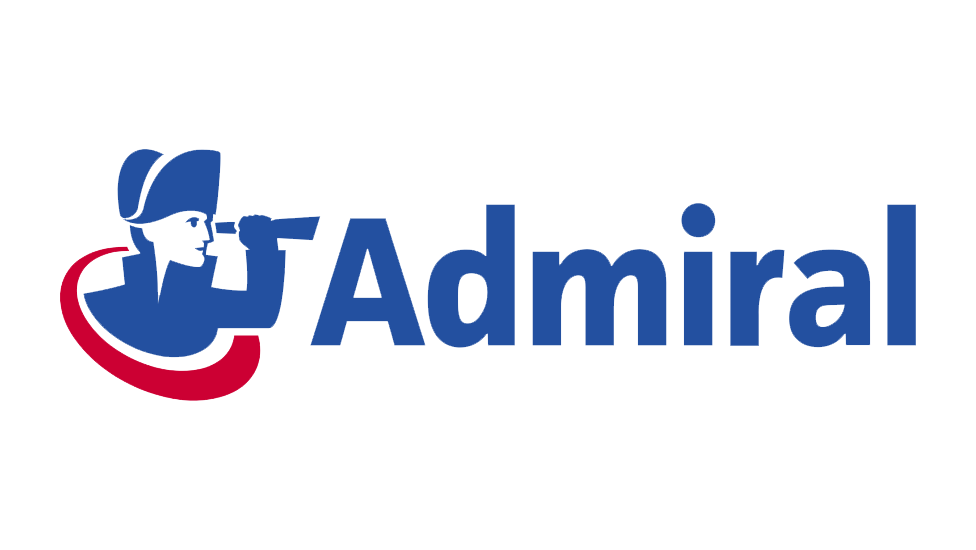 Admirall, assureur auto basé au Royaume-Uni
Cet exemple nous mais au courant des potentiels dangers derrière cette collecte de données. Cependant, cela démontre surtout les risques derrière une sur-exposition sur les réseaux sociaux et à quel point nos actions sur Internet peuvent nous décrire. En exemple plus centré sur la vente de données, nous pouvons prendre Facebook qui, en 2016, permettait aux annonceurs d'exclure certains groupes ethniques de leurs campagnes dont celles pour les offres d'emploi et de logement2. Cette exemple nous donnes l'impression d'être une gamme de produit qu'ils proposent à leurs clients. Une question se pose alors, sommes-nous vraiment conscients des données qui sont collectées lorsque nous utilisons les différents services des réseaux sociaux ?
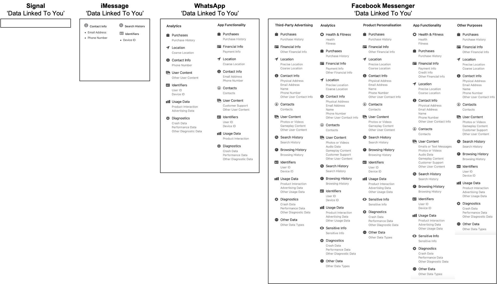
Voici un schéma de data visualisation représentant les différentes données que ces services de communication4 récoltent sur nous. Comme nous pouvons le voir, le nombre de données récoltées par les réseaux sociaux possédant le monopole est colossal. Lorsque nous les comparons à des services plus communautaires mettant la sécurité et la vie privée au premier plan, en utilisant des chaînes de chiffrages afin de garantir la conservation de nos données privées, nous nous rendons ainsi compte que privilégier un service moins connu, mais communautaire avec une communication plus transparente quand a la gestion de notre vie privée nous nous rendons compte que se fier au simple fait que ce service est le plus utilisé n'est pas forcément la meilleure des choses. En effet, utiliser un service moins connu apportera une expérience égale d'un point de vue de l'utilisation, mais aura un impact positif sur votre vie numérique.
Grâce aux différentes raisons citées précédemment, nous devrions commencer à mieux saisir les dangers de la collecte massive des données par les réseaux sociaux. “Individuellement, on ne peut pas faire grand chose. Mais être au courant de ce qui se trame est déjà une grande avancée.”, Edward Snowden
Mais même avertis et conscients de ce fonctionnement, les gens ne veulent pas ou ne savent pas comment réagir. Comme révélé par le sondage de Micode1 sur Instagram, la question était la suivante : "Est-ce que la surveillance en ligne influence votre comportement ?". Les réponses à cette question tournaient autour d'un oui général. Dû à la notoriété de la personne à l'origine de ce sondage, des réponses variées avec un fort échantillonnage a été possible. Les réponses, majoritairement positives, reflétaient également que les gens se sentaient impuissants, ne sachant pas comment se protéger ou réagir.
Image extraite d'une emission de micode, "Underscore" qui est une émission de vulgarisation orienté sur l'actualité dans le domaine du digital.
De nos jours, plusieurs méthodes existent afin de se protéger de la récolte des données. Le guide de Data detox de Mozilla, que j'ai pu tester, accompagne ses utilisateurs sur 8 jours avec une mission définie de 10 à 15 min par jour. Tout au long de ce guide, différents conseils nous sont donnés afin de reprendre le contrôle de notre vie numérique. Ils nous demandent, par exemple, de nous rendre dans les paramètres de notre compte Facebook afin de désactiver certaines options leur autorisant à collecter les données concernant notre localisation. Ils nous motivent également en nous donnant différents exemples en lien avec la mission du jour, ce qui a pour effet de ne pas nous faire abandonner et de toujours nous rappeler le but de ce guide. Si faire ce guide parait dur à surmonter, car, changeant les habitudes, nécessitant une implication ou autre, rien ne vous empêche d'entreprendre une démarche d'assainissement de votre vie numérique à plusieurs. En effet, ne pas être seul dans votre démarche vous permettra d'être plus motivé et de mieux avancer sans abandonner.
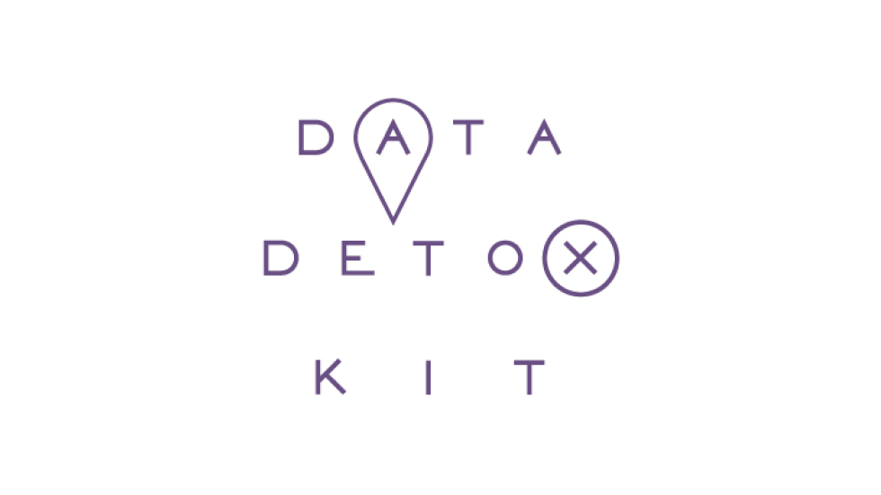 Data Detox Kit de Mozilla
La fuite de vos informations ne se passe pas uniquement via les réseaux sociaux : votre navigation sur Internet est constamment surveillée. Afin de pallier ce problème, différentes alternatives existent. Par exemple, une alternative au moteur de recherche Google est DuckDuckGo2. D'autres navigateurs comme Brave ou Opera peuvent remplacer Google Chrome et sont basés sur Chromium, qui est une base open source créée par Google. Vos extensions Chrome fonctionneront donc aussi sur ces navigateurs.
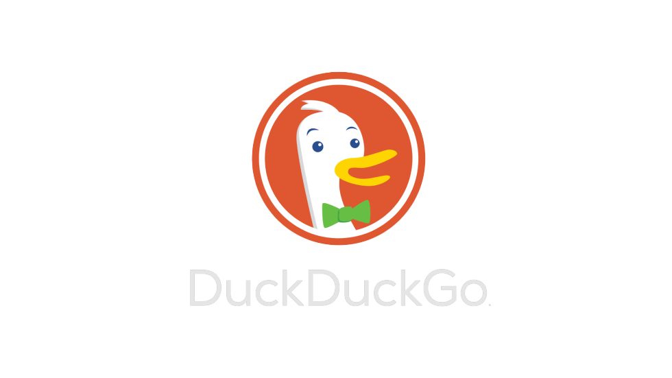 DuckDuckGo : Téléchargement 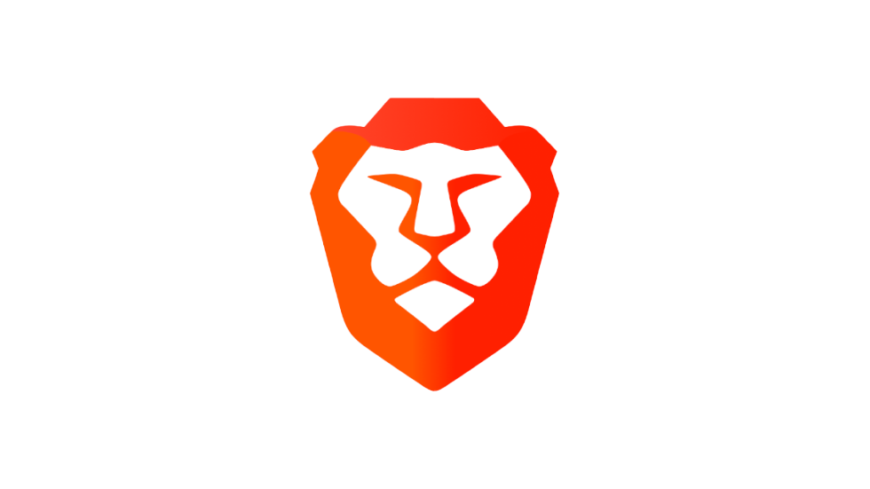 Brave : Téléchargement 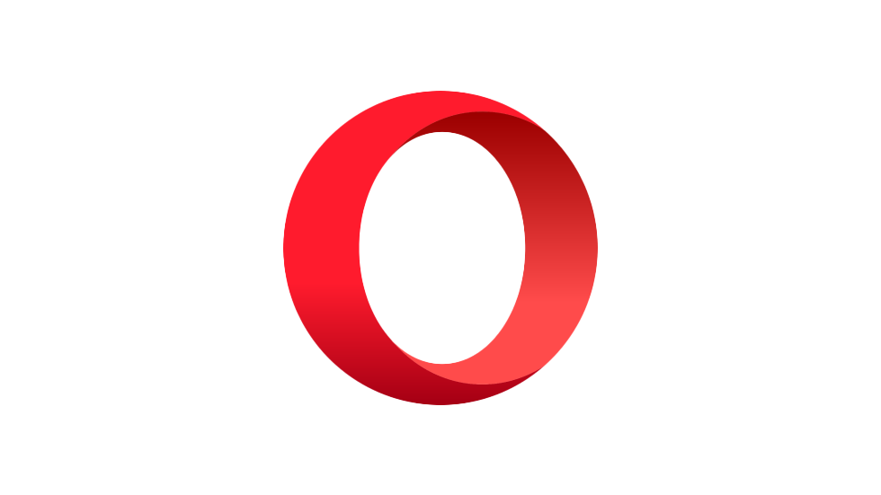 Opera : Téléchargement
Différentes extensions sont également utilisables afin de bloquer les différents traqueurs des réseaux sociaux, comme Privacy Badger, Ad nauseam ou Facebook Container.
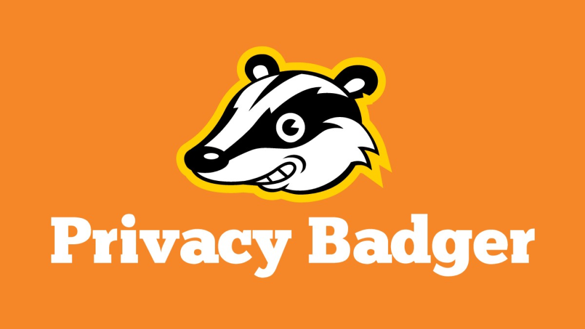 Privacy Badger est un bloqueur de traqueurs. Privcacy Badger : Ajouter au navigateur Chromium / Ajouter au navigateur Firefox 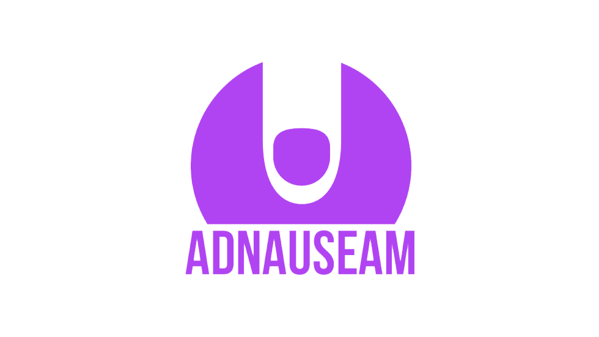 C’est une extension fonctionnant en arrière-plans cliquant sur des pubs différentes ce qui a pour effet de troubler les traqueurs pour qu'ils ne puissent pas identifier précisément nos goûts. Cela n’impacte en rien votre navigation car fonctionnant en arrière-plan. Suivre ces étapes pour Ajouter au navigateur Chromium / Ajouter au navigateur Firefox 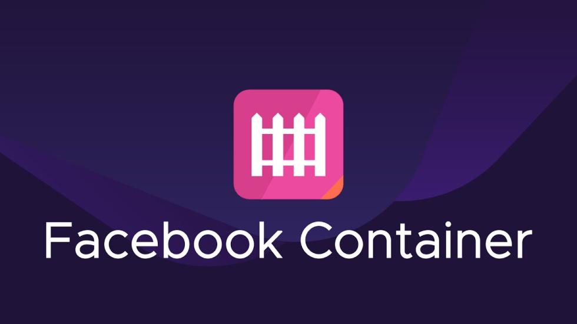 Bloqueur des traqueurs de Facebook (pas précisé si cela bloque les traqueurs de Meta ou uniquement de Facebook). Extension créée par Mozilla et donc pas disponible pour les navigateurs basés sur chromium. Ajouter au navigateur Firefox
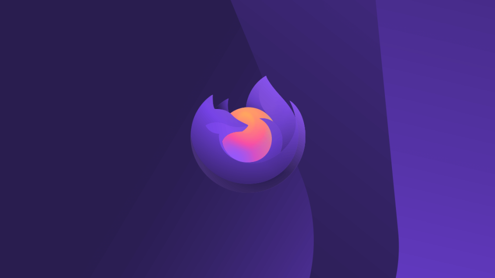 Firefox Focus : À télécharger sur votre mobile (App store, Google Play, Huawei store...)
Pour le cas de la navigation sur votre téléphone, vous pouvez par exemple utiliser Firefox focus qui vous permet de naviguer constamment en navigation privée3.
Certaines personnes utilisent également des moyens plus abstraits afin de contrer les actions des réseaux sociaux. Jennifer Lyn Morone4 a élaboré un plan artistique, nommé Extreme Capitalism, qui consiste à vendre ses données par elle-même au cours d'une exposition. Ainsi, elle manifeste contre le capitalisme de surveillance tout en émettant une critique sur notre société signifiant que la vie privée est un concept aboli.
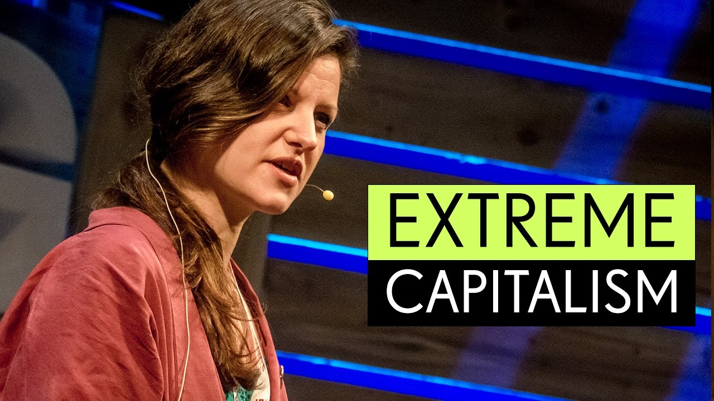 Image tirée d'une conférence prise sur youtube
La question n'est pas tant d'échapper à la manipulation des réseaux sociaux, mais de réagir en contrant et limitant au maximum les données qu'ils peuvent collecter sur nous. En effet, les réseaux sociaux prennent désormais une place tellement grande qu'ils en sont devenu incontrôlables et peuvent se permettre de créer leurs propres règles. Cependant, la question de la conservation de la vie privée devient une problématique à laquelle nous nous intéressons de plus en plus. Nous pouvons notamment constater ce phénomène par l'implication de la loi, avec les différentes améliorations de la RGPD, mais également par une volonté d'information naissante, comme nous avons pu le voir avec le documentaire de Netflix "Derrière nos écrans de fumée". 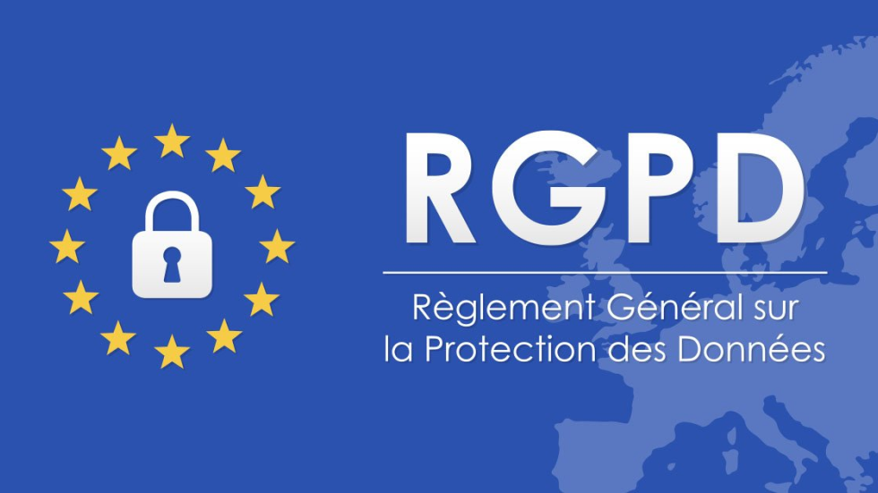 RGPD : Règlement Général sur la Protection des Données 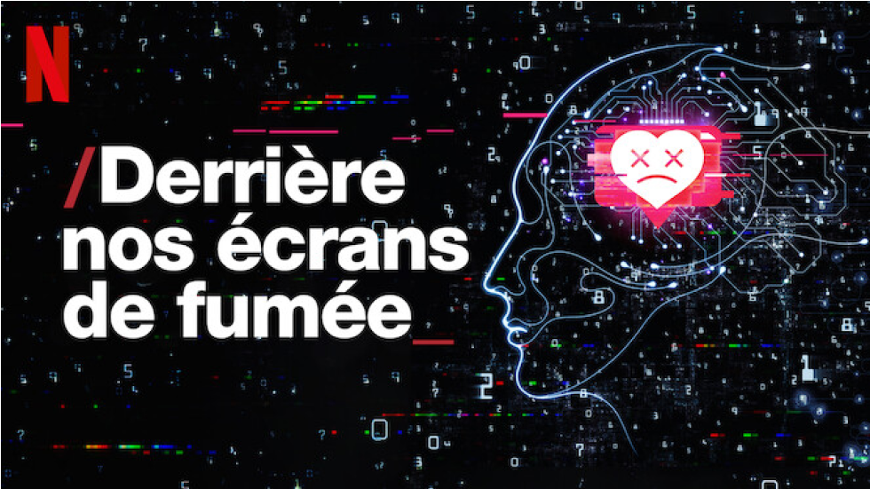 Derrière nos écrans de fumée
Afin de rester les leaders de leur domaine, les entreprises des réseaux sociaux doivent convaincre leur public en gagnant ou regagnant leur confiance. C'est pourquoi nous pouvons voir différentes initiatives apparaître comme par exemple l'annonce de Meta, la nouvelle identité de Facebook, qui lui permet de repartir sur de nouvelles bases, après les différentes affaires liées à la fuite de données de millions d'utilisateurs. Ils suggèrent également une amélioration de la vie privée pour ses utilisateurs. Nous pouvons voir aussi le nouveau Android 12 de Google qui prône une amélioration de la protection de la vie privée pou ses utilisateurs. 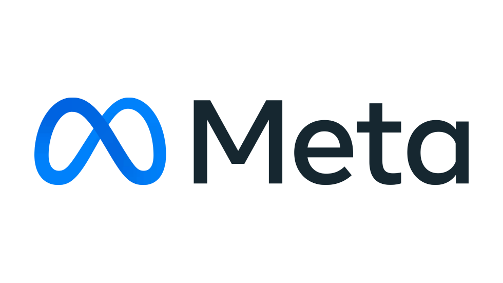 Logo Meta 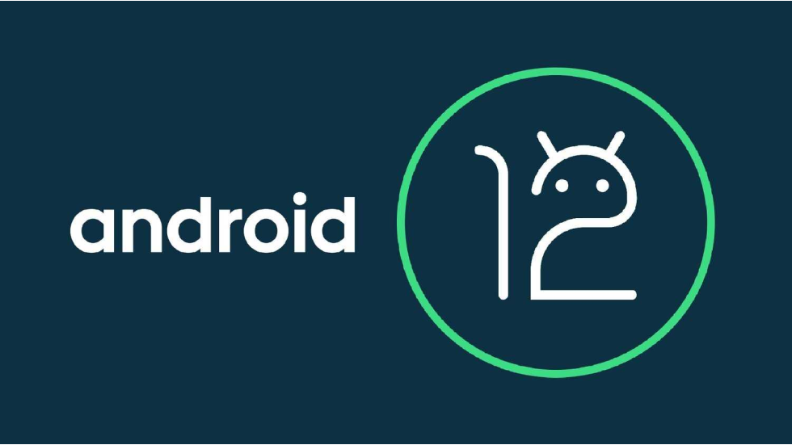 Android 12
Les moyens pour se protéger de la collecte de nos données restent malgré tout trop peu mis en avant ou trop complexe d'accès pour des utilisateurs non-initiés. Nous pourrions alors imaginer des solutions future beaucoup plus simple et didactique permettant un suivis continuel pour ses utilisateurs, permettant ainsi d'entrevoir un avenir numérique plus sain.
1. Tactical Texh & Mozilla, "Data detox kit" (2017) 2. Jeff Orlowski, "Derrière nos écrans de fumée" (2020) 3.Harry Brignull"What are dark patterns" (s.d) 4. Thinking Digital Conference, "Jennifer Morone, Extreme Capitalism" (2015) 5. Raphaël Grably, "Nouvelles règles sur les cookies à partir de ce 1er avril: ce qui change pour les internautes", BFMTV (2021) 6. Zak Doffman, "Security Researcher Finds Facebook App Tracking iPhone Movements", Forbes (2021) 7. Micode, "Peut-on faire confiance au Canada ?" (2021) 8. Micode, "Sondage : Est-ce que la surveillance en ligne influence votre comportement ?" (2021)
Dans le cadre de mon mémoire, j'ai effectué les huit jours nécessaires afin de compléter les indications du guide de Mozilla. J'ai alors pris des notes sur mes différents ressentis en fonction de ce qui m'était dit de faire. Mon ressenti final, après quelques jours, est le suivant :
“Je suis désormais plus vigilant sur ce que l’on me propose d’accepter. J’ai également pris conscience de la quantité d'informations que je pouvais laisser s’échapper. Je me sens aussi plus à l’abri lors de mes différentes actions numériques ce qui me permet d’avoir une expérience numérique plus sereine. Je ressens également une petite satisfaction car j'ai l'impression de déjouer les plans des grandes entreprises.“
Suivre ce guide m'a permis de prendre conscience des différents dangers liés à la collecte des données, mais également, de pouvoir analyser comment accompagner quelqu'un dans sa démarche de changement.
Afin de tester personnellement les solutions que j'allais proposer dans mon écrit, j'ai installé différentes extensions. Elles font aujourd'hui partie intégrante de mon expérience numérique, ne plus les avoirs me fais ressentir une sorte de vulnérabilité. Mon expérience est désormais plus saine. En effet, j'ai beaucoup moins de publicités personnalisée, ce qui est une indication prouvant leur efficacité.